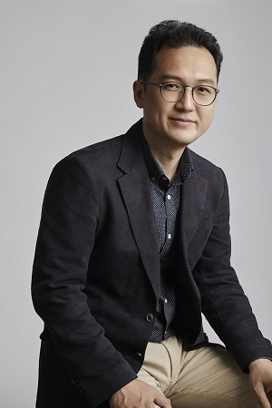

|  | Sangyoung Son, Ph.D
|


Short Bio
I am a full professor at School of Civil, Environmental and Architectural Engineering in Korea University(KU) since 2015. Before joining KU, I was with University of Southern California as a postdoctoral scholar and with University of Ulsan as an assistant professor. I earned Ph.D degree from the University of Southern California in 2012 and ME degree from Texas A&M University in 2011. I completed BS and MS degrees at Seoul National University, from 1996 to 2002. My research highly focuses on the numerical modeling of long waves, tsunamis, storm surges, sediment transports, coastal processes and turbulent mixing in the nearshore, even though some experimental works have featured in my career. Since 2007, I hold a Professional Engineering Certificate registered at Oregon State.
Education
University of Southern California, Los Angeles, CA, US (Aug. 2012)
Ph.D in Civil Engineering (Advisor : Patrick J. Lynett)
- Dissertation Title : Wave Induced Hydrodynamic Complexity and Transport in the NearshoreTexas A&M University, College Station, TX (Dec. 2011)
M.E in Civil Engineering (Advisor : Patrick J. Lynett)
- Research Topic : Coupled Nuimerical Model for Lifeline Tsunami EvolutionSeoul National University, Seoul, Korea (Feb. 2002)
M.S in Civil, Urban and Geosystem Engineering (Advisor : Kyung-Duck Suh)
- Thesis Title : Calculation of Irregular Wave Reflection from Perforated-Wall Caisson BreakwatersSeoul National University, Seoul, Korea (Feb. 2000)
B.S in Civil,Urban and Geosystem Engineering
Employments
Korea University, Seoul, Korea (Sep. 2015 ~ present)
Professor in School of Civil, Environmental and Architectural EngineeringUniversity of Ulsan, Ulsan, Korea (Sep. 2013 ~ Aug. 2015)
Assistant Professor in Department of Civil & Environmental EngineeringUniversity of Southern California, Los Angeles, CA, US (Sep. 2012 ~ Aug. 2013)
Postdoctoral Scholar in Department of Civil & Environmental EngineeringUniversity of Southern California, Los Angeles, CA, US (Sep. 2011 ~ Aug. 2012)
Graduate Research Assistant in Department of Civil & Environmental EngineeringOregon State University, Corvallis, OR, US (May 2009 ~ Jul. 2009)
Visiting Graduate Researcher in O.H. Hinsdale Wave Research LaboratoryTexas A&M University, College Station, TX, US (Aug. 2008 ~ Aug. 2011)
Graduate Research Assistant in Department of Civil & Environmental EngineeringHyundai Engineering & Construction Co., Korea (Mar. 2002 ~ JUl. 2008)
Assistant Senior Engineer in HICT and Div. of Civil Design
Professional Services
Assistant Editor, Geoscience Letters (2023 ~ present)
Associate Editor, Journal of Hydro-Environment Research (2022 ~ present)
Associate Editor, Coastal Engineering Journal (2019 ~ present)
Topical Advisory Panel, Applied Sciences (2021 ~ present)
Special Issue Editor, Journal of Marine Science and Engineering (Jul. 2019 ~ Mar. 2020)
International Coastal Engineering Committee (2018~present)
International Society of Offshore & Polar Engineering Conference (ISOPE)Local Organization Committee, Busan, Korea, (May 2018)
International Coastal Symposium (ICS)Local Organization Committee, Incheon, Korea, (Aug. 2016)
International Conference on Hydroinformatics (HIC)
Certificates
Professional Engineer, OR, US (2007~2016)
Information Processing Engineer, KR (since 1999)
Honors and Awards
Best Paper Awards, KOSHAM Anual Conference (Feb. 2019)
Korean Society of Hazard Mitigation, KoreaAwarded Commendation for Supporting Services of Hazards Mitigation (Jan. 2019)
Ministry of the Interior and Safety, KoreaBest Paper Awards, KSCE Annual Conference (Sep. 2018)
Korea Society of Civil Engineers, KoreaBest Presentatation Awards, KWRA Anual Conference (May 2017)
Korean Water Resource Association, KoreaBest Paper Awards, KSCDP Annual Conference (Nov. 2015)
Korea Society of Coastal Disaster Prevention, KoreaBest Paper Awards, KSCOE Annual Conference (Nov. 2013)
Korea Society of Coastal and Ocean Engineers, KoreaChester P. Jelesnianski Scholarship (Sep. 2010)
Zachry Department of Civil Engineering, Texas A&M University, USJoseph A. Orr. Fellowship (Sep. 2008)
Zachry Department of Civil Engineering, Texas A&M University, USScholarship Assistance (Sep. 1997, Mar. 1998, Sep. 1999)
School of Civil,Urban and Geosystem Engineering, Seoul National University, Korea
Professional Membership
American Society of Civil Engineers(ASCE)
Coasts, Oceans, Ports and Rivers Institute(COPRI)
American Geophysical Union(AGU)
International Associationof Hydraulic Engineering and Research(IAHR)
Coastal Eduation & Research Foundation(CERF)
Korean Society of Civil Engineers(KSCE)
Korean Water Resource Association(KWRA)
Korean Society of Hazard Mitigation(KOSHAM)
Korean Society of Coastal and Ocean Engineers(KSCOE)
Korean Society of Coastal Disaster Prevention(KSCDP)
Earthquake Engineering Society of Korea(EESK)